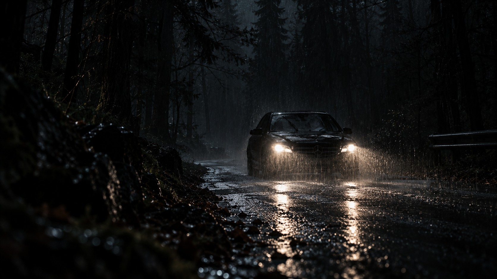
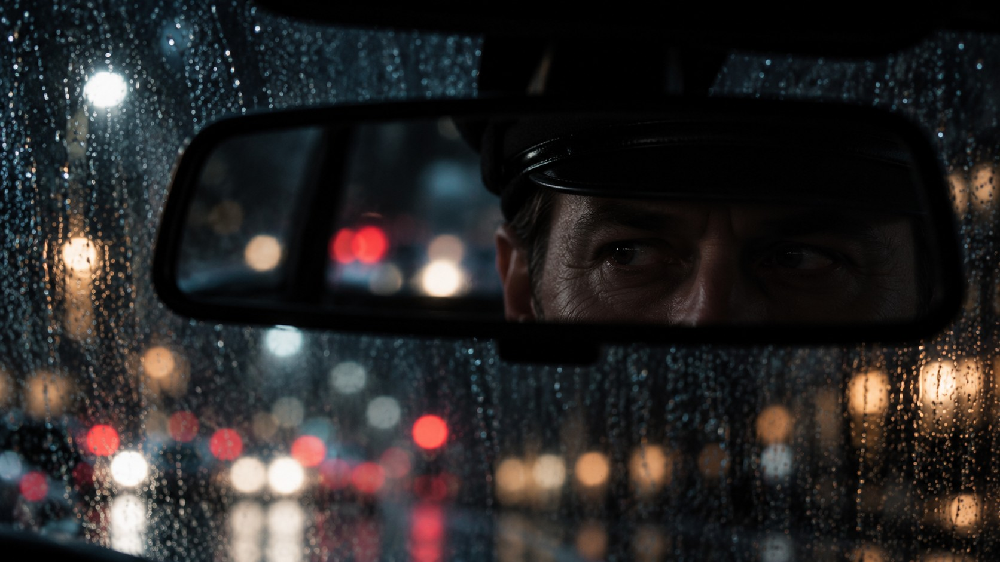
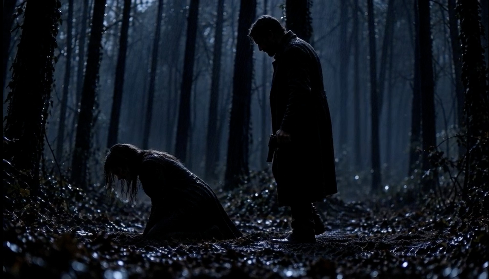

Narrative AI Film
The Passenger
Atmosphere-led visual storytelling, built around cinematic framing, tension and a cohesive narrative world.



NEXT PROJECTVex Darkness ↗
Narrative AI Film
Atmosphere-led visual storytelling, built around cinematic framing, tension and a cohesive narrative world.


